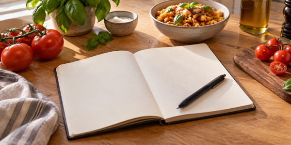
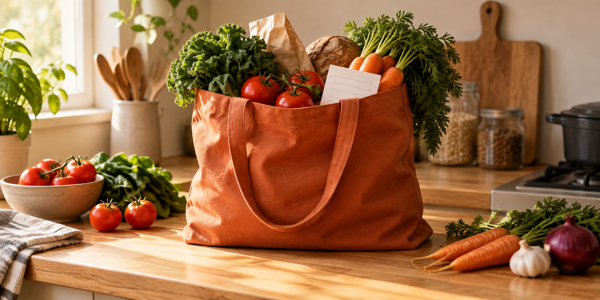
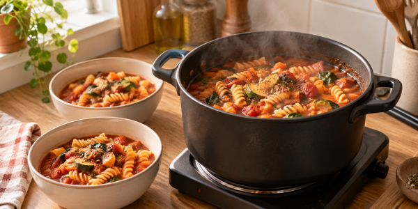

Step 1

Plan the Week
Choose three evening meals that share ingredients, cook a double portion of one of them, and leave one evening open for whatever is still in the fridge.

Plan once, shop once, eat well all week.
A week of meals is far easier to manage when it is written down before you shop. Three steps are enough.
Step 1

Choose three evening meals that share ingredients, cook a double portion of one of them, and leave one evening open for whatever is still in the fridge.
Step 2

Group the list by where things sit in the shop, and buy the fresh items last, so that they spend the least time out of the fridge.
Step 3

Cook the batch on the evening you have the most time, and portion it before you sit down to eat.
One evening meal carries into the next day as lunch, and one pot covers two evenings. The weekend is left open.
| Day | Evening meal | Next-day lunch | Equipment |
|---|---|---|---|
| Monday | One-pan pasta | Cold pasta salad | One hotplate |
| Tuesday | Lentil soup, cooked as a double batch | Soup with bread | One hotplate |
| Wednesday | Soup with rice | Microwave | |
| Thursday | Vegetable stir-fry | Stir-fry wrap | One hotplate |
| Friday | Baked potato with beans | Potato salad | Microwave |
| Saturday and Sunday are left open for whatever is still in the fridge. | |||